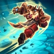

Khan
Primus of house Aico
Khan is a offensive/semi-support front line. The primary weapon Heavy Repeater deals damage up to medium range. His skills center around solidifying team position and breaking apart enemy lines with Commander's Grab. He can support his team with Battle Shout, which will heal him and the team mates around him. In addition he has a decent movement speed for a frontline. His ultimate Overpower, targets an enemy and drags them to you.
Heavy Repeater
Bulwark
Battle Shout
Commander's Grab

Overpower (Ultimate)

Inara
The Stone Warden
Inara is a Front Line Champion with a great amount of sustainability with Earthen Guard and is capable of hard point fights. Her weapon can deal great damage up to medium distance. Unlike other front lines she does not have a shield, she deploys a wall instead. With Warder's Field (which slows enemies), she can deal a considerable amount of damage at extremely close range. This ability can be useful for keeping enemies away from the capture point or preventing flanks from escaping. Her ultimate, Seismic Crash, passes through certain shields (other shields are not able to block the attack, such as Atlas') and stuns any enemies in the area.
Stone Spear
Earthen Guard
Impasse
Warder's Field

Seismic Crash (Ultimate)